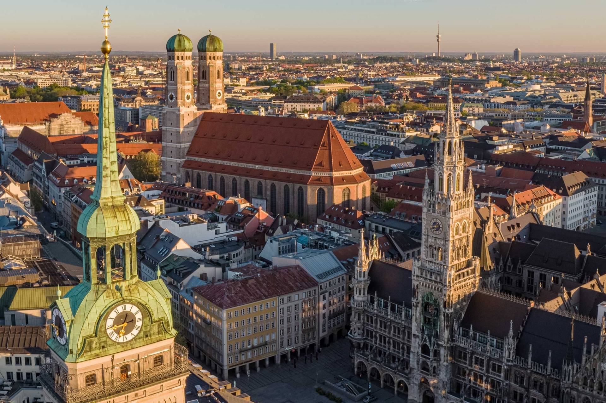

About Munich
Munich (München) is the capital of Bavaria and Germany's third-largest city. It is a city that strikes a perfect balance between tradition and modernity — where you can admire baroque architecture, world-class museums, and then relax with a beer in one of the city's famous beer gardens.
Munich is also the gateway to the Bavarian Alps, making it an ideal base for day trips to places like Neuschwanstein Castle, the Zugspitze mountain, and the romantic town of Füssen.

Top Attractions
Marienplatz
Munich's central square and beating heart of the city. The stunning neo-Gothic New Town Hall with its famous Glockenspiel carillon is unmissable.
English Garden (Englischer Garten)
One of the world's largest city parks — bigger than New York's Central Park. Home to beer gardens, a Japanese tea house, and surfers on the Eisbach stream.
Deutsches Museum
The world's largest museum of science and technology, with 28,000 square metres of exhibits on everything from aviation to mining.
Nymphenburg Palace
A grand baroque summer residence of the Bavarian royal family, set in extensive formal gardens on the western edge of the city.
BMW World and Museum
The iconic BMW headquarters, museum, and showroom — a must for car enthusiasts. The building itself is a remarkable piece of architecture.
Viktualienmarkt
Munich's famous daily outdoor market, selling fresh produce, cheeses, meats, and Bavarian specialties in the city centre since 1807.
Getting Around Munich
Munich has an excellent public transport network of U-Bahn (subway), S-Bahn (city rail), trams, and buses. The airport is connected to the city centre by S-Bahn in about 40 minutes. A day pass (Tageskarte) is excellent value for tourists.